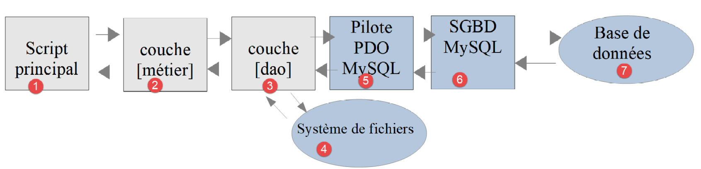
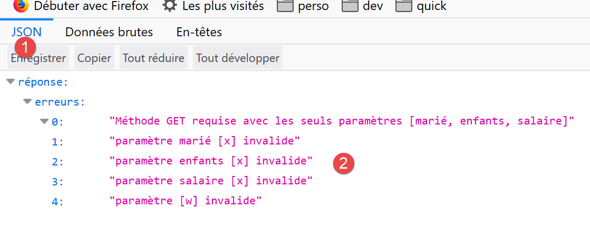
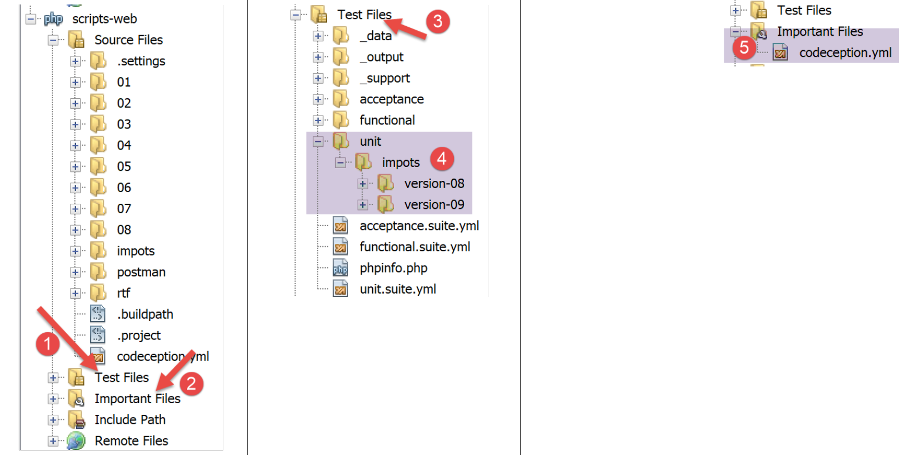
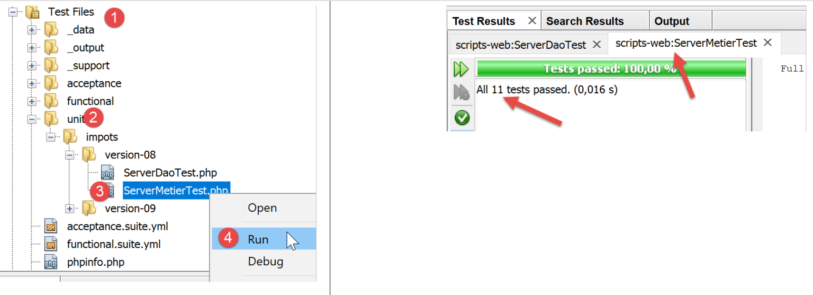
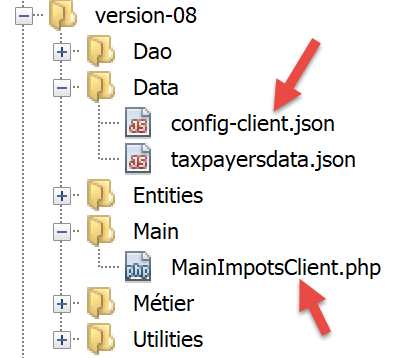

18. Esercizio pratico – versione 8
Riprenderemo l’applicazione di esempio – versione 5 (paragrafo link) e la trasformeremo in un’applicazione client/server.
18.1. Introduction
L’architettura della versione 5 era la seguente:

- il livello denominato [dao] (Data Access Objects) gestisce gli scambi con il database MySQL e il sistema di file locale;
- il livello denominato [métier] esegue il calcolo dell’imposta;
- lo script principale funge da coordinatore: istanzia i livelli [dao] e [métier], quindi interagisce con il livello [métier] per eseguire le operazioni necessarie;
Migreremo questa architettura verso la seguente architettura client/server:

- In [2], riprenderemo il livello [dao] della versione 5, rimuovendo i metodi di accesso al file system locale. Tali metodi verranno trasferiti nel livello [dao] del client [6, 7];
- in [3], il livello [métier] rimarrà quello della versione 5 senza i metodi [executeBatchImpôts, saveResults], che verranno migrati nel livello [dao] [7] del client;
- in [4], lo script del server deve essere scritto: dovrà:
- creare i livelli [métier], [dao] e [3, 2];
- interagire con lo script client [5, 7];
- in [7], va scritto il livello [dao] del client:
- sarà un client HTTP dello script server [4, 5];
- riprenderà i metodi di accesso al file system locale del livello [dao] della versione 5;
- in [8], il livello [métier] del client rispetterà l’interfaccia [InterfaceMetier] della versione 5. La sua implementazione sarà tuttavia diversa. Nella versione 5, il livello [métier] effettuava il calcolo dell’imposta. In questo caso, è il livello [métier] del server a effettuare tale calcolo. Il livello [métier] ricorrerà quindi ai livelli [dao] e [7] per comunicare con il server e richiederne il calcolo dell’imposta;
- in [9], lo script della console dovrà istanziare i livelli [dao, métier] del client e avviarne l’esecuzione;
18.2. Il server
Ci interessa la parte server dell’applicazione.

Questa architettura sarà implementata dai seguenti script:

18.2.1. Le entità scambiate tra i livelli

Le entità scambiate tra i livelli sono quelle della versione 5 descritte nel paragrafo "link".
18.2.2. Il livello [dao]

Il livello [dao] implementa la seguente interfaccia [InterfaceServerDao]:
<?php
// spazio dei nomi
namespace Application;
interface InterfaceServerDao {
// Lettura dei dati dell'amministrazione fiscale
public function getTaxAdminData(): TaxAdminData;
}
- riga 9: il metodo [getTaxAdminData] recupera i dati dell’amministrazione fiscale da un database;
L'interfaccia [InterfaceServerDao] è implementata dalla seguente classe [ServerDao]:
<?php
// spazio dei nomi
namespace Application;
// Definizione di una classe ImpotsWithDataInDatabase
class ServerDao implements InterfaceServerDao {
// l'oggetto di tipo TaxAdminData contenente i dati delle fasce d'imposta
private $taxAdminData;
// l'oggetto di tipo [Database] contenente le caratteristiche di BD
private $database;
// costruttore
public function __construct(string $databaseFilename) {
// si memorizza la configurazione JSON del database
$this->database = (new Database())->setFromJsonFile($databaseFilename);
// si prepara l'attributo
$this->taxAdminData = new TaxAdminData();
try {
// si apre la connessione al database
$connexion = new \PDO($this->database->getDsn(), $this->database->getId(), $this->database->getPwd());
// si desidera che ad ogni errore di SGBD venga generata un'eccezione
$connexion->setAttribute(\PDO::ATTR_ERRMODE, \PDO::ERRMODE_EXCEPTION);
// si avvia una transazione
$connexion->beginTransaction();
// si compila la tabella delle fasce di imposta
$this->getTranches($connexion);
// si compila la tabella delle costanti
$this->getConstantes($connexion);
// la transazione viene conclusa con esito positivo
$connexion->commit();
} catch (\PDOException $ex) {
// C'è una transazione in corso?
if (isset($connexion) && $connexion->inTransaction()) {
// si conclude la transazione con esito negativo
$connexion->rollBack();
}
// si reindirizza l'eccezione al codice chiamante
throw new ExceptionImpots($ex->getMessage());
} finally {
// si chiude la connessione
$connexion = NULL;
}
}
// lettura dei dati dal database
private function getTranches($connexion): void {
…
}
// lettura della tabella delle costanti
private function getConstantes($connexion): void {
…
}
// restituisce i dati necessari per il calcolo dell'imposta
public function getTaxAdminData(): TaxAdminData {
return $this->taxAdminData;
}
}
Questo codice è stato presentato nel paragrafo «link».
18.2.3. Lo strato [métier]
Il livello [métier] implementa la seguente interfaccia [InterfaceServerMetier]:
<?php
// spazio dei nomi
namespace Application;
interface InterfaceServerMetier {
// calcolo delle imposte di un contribuente
public function calculerImpot(string $marié, int $enfants, int $salaire): array;
}
L’interfaccia [InterfaceServerMetier] è implementata dalla seguente classe [ServerMetier]:
<?php
// spazio dei nomi
namespace Application;
class ServerMetier implements InterfaceServerMetier {
// livello DAO
private $dao;
// dati dell'amministrazione fiscale
private $taxAdminData;
//---------------------------------------------
// impostazione del livello [dao]
public function setDao(InterfaceServerDao $dao) {
$this->dao = $dao;
return $this;
}
public function __construct(InterfaceServerDao $dao) {
// si memorizza un riferimento sul livello [dao]
$this->dao = $dao;
// si recuperano i dati necessari per il calcolo dell'imposta
// il metodo [getTaxAdminData] può generare un'eccezione ExceptionImpots
// si lascia quindi che l'eccezione venga propagata al codice chiamante
$this->taxAdminData = $this->dao->getTaxAdminData();
}
// calcolo dell'imposta
// --------------------------------------------------------------------------
public function calculerImpot(string $marié, int $enfants, int $salaire): array {
…
// risultato
return ["impôt" => floor($impot), "surcôte" => $surcôte, "décôte" => $décôte, "réduction" => $réduction, "taux" => $taux];
}
// --------------------------------------------------------------------------
private function calculerImpot2(string $marié, int $enfants, float $salaire): array {
…
// risultato
return ["impôt" => $impôt, "surcôte" => $surcôte, "taux" => $coeffR[$i]];
}
// revenuImposable=stipendioAnnuale-detrazione
// la detrazione ha un valore minimo e uno massimo
private function getRevenuImposable(float $salaire): float {
…
// risultato
return floor($revenuImposable);
}
// calcola un'eventuale riduzione
private function getDecôte(string $marié, float $salaire, float $impots): float {
…
// risultato
return ceil($décôte);
}
// calcola un'eventuale riduzione
private function getRéduction(string $marié, float $salaire, int $enfants, float $impots): float {
..
// risultato
return ceil($réduction);
}
}
Questo codice è già stato presentato e commentato nella versione 1 al paragrafo link. La sua versione orientata agli oggetti con un database è stata presentata al paragrafo link.
18.2.4. Lo script del server

Lo script del server implementa il livello [web] [4]. Lo script [impots-server] è configurato dal seguente file jSON [config-server.json]:
{
"rootDirectory": "C:/myprograms/laragon-lite/www/php7/scripts-web/impots/version-08",
"databaseFilename": "Data/database.json",
"taxAdminDataFileName": "Data/taxadmindata.json",
"relativeDependencies": [
"/Entities/BaseEntity.php",
"/Entities/ExceptionImpots.php",
"/Entities/TaxAdminData.php",
"/Entities/Database.php",
"/Dao/InterfaceServerDao.php",
"/Dao/ServerDao.php",
"/Métier/InterfaceServerMetier.php",
"/Métier/ServerMetier.php"
],
"absoluteDependencies": ["C:/myprograms/laragon-lite/www/vendor/autoload.php"],
"users": [
{
"login": "admin",
"passwd": "admin"
}
]
}
- riga 1: la cartella radice da cui verranno misurati i percorsi dei file;
- riga 2: il file di configurazione del database jSON;
- riga 3: il file jSON contenente i dati dell’amministrazione fiscale;
- righe 5-14: i file dell’applicazione;
- riga 15: la dipendenza necessaria dalle librerie di terze parti, in questo caso Symfony;
- righe 16-20: la tabella degli utenti autorizzati a utilizzare l’applicazione;
I file jSON e [database.json, taxadmindata.json] sono quelli della versione 5 descritta nel paragrafo "link".
Lo script [impots-server] implementa il livello [web] nel modo seguente:
<?php
// rigoroso rispetto dei tipi dichiarati dei parametri delle funzioni
declare (strict_types=1);
// spazio dei nomi
namespace Application;
// gestione degli errori tramite PHP
//ini_set("display_errors", "0");
//
// percorso del file di configurazione
define("CONFIG_FILENAME", "Data/config-server.json");
// si recupera la configurazione
$config = \json_decode(file_get_contents(CONFIG_FILENAME), true);
// si includono le dipendenze necessarie allo script
$rootDirectory = $config["rootDirectory"];
foreach ($config["relativeDependencies"] as $dependency) {
require "$rootDirectory$dependency";
}
// dipendenze assolute (librerie di terze parti)
foreach ($config["absoluteDependencies"] as $dependency) {
require "$dependency";
}
// definizione delle costanti
define("DATABASE_CONFIG_FILENAME", $config["databaseFilename"]);
//
// dipendenze Symfony
use \Symfony\Component\HttpFoundation\Response;
use \Symfony\Component\HttpFoundation\Request;
// preparazione della risposta JSON del server
$response = new Response();
$response->headers->set("content-type", "application/json");
$response->setCharset("utf-8");
// si recupera la richiesta corrente
$request = Request::createFromGlobals();
// autenticazione
$requestUser = $request->headers->get('php-auth-user');
$requestPassword = $request->headers->get('php-auth-pw');
// L'utente esiste?
$users = $config["users"];
$i = 0;
$trouvé = FALSE;
while (!$trouvé && $i < count($users)) {
$trouvé = ($requestUser === $users[$i]["login"] && $users[$i]["passwd"] === $requestPassword);
$i++;
}
// impostazione del codice di stato della risposta
if (!$trouvé) {
// non trovato - codice 401
$response->setStatusCode(Response::HTTP_UNAUTHORIZED);
$response->headers->add(["WWW-Authenticate" => "Basic realm=" . utf8_decode("\"Serveur de calcul d'impôts\"")]);
// messaggio di errore
$response->setContent(\json_encode(["réponse" => ["erreur" => "Echec de l'authentification [$requestUser, $requestPassword]"]], JSON_UNESCAPED_UNICODE));
$response->send();
// fine
exit;
}
// l'utente è valido - si verificano i parametri ricevuti
$erreurs = [];
// devono esserci tre parametri GET
$method = strtolower($request->getMethod());
$erreur = $method !== "get" || $request->query->count() != 3;
// errore?
if ($erreur) {
$erreurs[] = "Méthode GET requise avec les seuls paramètres [marié, enfants, salaire]";
}
// si recupera lo stato civile
if (!$request->query->has("marié")) {
$erreurs[] = "paramètre marié manquant";
} else {
$marié = trim(strtolower($request->query->get("marié")));
$erreur = $marié !== "oui" && $marié !== "non";
// errore?
if ($erreur) {
$erreurs[] = "paramètre marié [$marié] invalide";
}
}
// si recupera il numero di figli
if (!$request->query->has("enfants")) {
$erreurs[] = "paramètre enfants manquant";
} else {
$enfants = trim($request->query->get("enfants"));
// il numero di figli deve essere un numero intero >=0
$erreur = !preg_match("/^\d+$/", $enfants);
// errore?
if ($erreur) {
$erreurs[] = "paramètre enfants [$enfants] invalide";
}
}
// si recupera lo stipendio annuale
if (!$request->query->has("salaire")) {
$erreurs[] = "paramètre salaire manquant";
} else {
// lo stipendio deve essere un numero intero >=0
$salaire = trim($request->query->get("salaire"));
$erreur = !preg_match("/^\d+$/", $salaire);
// errore?
if ($erreur) {
$erreurs[] = "paramètre salaire [$salaire] invalide";
}
}
// altri parametri nella richiesta?
foreach (\array_keys($request->query->all()) as $key) {
// parametro valido?
if (!\in_array($key, ["marié", "enfants", "salaire"])) {
$erreurs[] = "paramètre [$key] invalide";}
}
// errori?
if ($erreurs) {
// viene inviato al cliente un codice di errore 400
$response->setStatusCode(Response::HTTP_BAD_REQUEST);
$response->setContent(json_encode(["réponse" => ["erreurs" => $erreurs]], JSON_UNESCAPED_UNICODE));
$response->send();
exit;
}
// abbiamo tutto il necessario per lavorare
// creazione dell'architettura del server
$msgErreur = "";
try {
// creazione del livello [dao]
$dao = new ServerDao($config["databaseFilename"]);
// creazione del livello [métier]
$métier = new ServerMetier($dao);
} catch (ExceptionImpots $ex) {
// si rileva l'errore
$msgErreur = utf8_encode($ex->getMessage());
}
// errore?
if ($msgErreur) {
// viene inviato al client un codice di errore 500
$response->setStatusCode(Response::HTTP_INTERNAL_SERVER_ERROR);
$response->setContent(\json_encode(["réponse" => ["erreur" => $msgErreur]], JSON_UNESCAPED_UNICODE));
$response->send();
exit;
}
// calcolo dell’imposta
$result = $métier->calculerImpot($marié, (int) $enfants, (int) $salaire);
// si restituisce la risposta
$response->setContent(json_encode(["réponse" => $result], JSON_UNESCAPED_UNICODE));
$response->send();
Commenti
- riga 16: si utilizza il file di configurazione;
- righe 18-26: si caricano tutte le dipendenze;
- riga 29: il nome del file [database.json];
- righe 32-33: si dichiarano le classi delle librerie di terze parti che verranno utilizzate;
- righe 36-38: si prepara una risposta jSON;
- righe 40-52: si verifica che l'utente che effettua la richiesta faccia effettivamente parte degli utenti autorizzati;
- righe 54-63: in caso contrario, si invia il codice HTTP 401 che indica un rifiuto di accesso. Alla ricezione di questo codice e dell’intestazione HTTP [WWW-Authenticate => Basic realm=], la maggior parte dei browser visualizza una finestra di autenticazione che invita l’utente ad autenticarsi;
- riga 59: la risposta jSON del server spiega la causa dell’errore. Tutte le risposte del server saranno la stringa jSON di una tabella [‘réponse’=>’qq chose’];
- righe 64-117: si verifica la validità della richiesta:
- una richiesta GET con esattamente tre parametri;
- un parametro [marié] il cui valore deve essere «sì» o «no»;
- un parametro [enfants] il cui valore deve essere un numero intero >=0;
- un parametro [salaire] il cui valore deve essere un numero intero >=0;
- riga 65: ogni volta che viene rilevato un errore, viene aggiunto un messaggio di errore all’array [$erreurs];
- righe 120-126: in caso di errore, viene inviato al cliente il codice HTTP [400 Bad Request] (riga 122);
- riga 123: la risposta jSON del server spiega la causa dell’errore;
- a partire dalla riga 132, tutto è stato verificato. È possibile istanziare i livelli [dao, métier]. Questa istanziazione ha un costo e va eseguita solo se si è certi di avere una richiesta valida;
- righe 130-138: si crea l'architettura del server. La creazione del livello [dao] può generare un'eccezione di tipo [ExceptionImpots]. Se si verifica questa eccezione, si registra l'errore;
- righe 135-138: se si è verificata un'eccezione, si invia al client il codice HTTP 500. Questo codice indica che il server ha riscontrato un errore;
- riga 143: la risposta spiega la causa dell’errore;
- riga 148 : il calcolo dell’imposta viene delegato al livello [métier];
- righe 150-151: invio della risposta;
Proviamo questo script con un browser. Richiediamo la pagina protetta URL tramite [https://localhost:443/php7/scripts-web/impots/version-08/impots-server.php?marié=oui&enfants=5&salaire=100000]:

- in [1], la versione protetta URL richiesta;
- in [2], i tre parametri [marié, enfants, salaire];
- in [3], il server Apache di Laragon ha inviato un certificato autofirmato SSL. Il browser lo ha rilevato e visualizza un avviso di sicurezza: considera che il sito del server non sia affidabile;
- in [4], si prosegue;

- in [6], si prosegue;

- in [7], il browser visualizza una finestra in cui l’utente può autenticarsi;
- da [9,10], si digitano [admin] e [admin];

- in [13], la risposta jSON del server;
Facciamo alcuni test di errore:
Richiediamo URL [https://localhost/php7/scripts-web/impots/version-08/impots-server.php?marié=x&enfants=x&salaire=x&w=x]
Si ottiene il seguente risultato:

Eliminiamo SGBD e MySQL e richiediamo URL e [https://localhost/php7/scripts-web/impots/version-08/impots-server.php?marié=oui&enfants=3&salaire=60000]:

18.2.5. Test [Codeception]
Ogni volta che realizzeremo una nuova versione del server, testeremo i livelli [métier] e [dao] come è stato fatto a partire dalla versione 04 (cfr. paragrafi link e link).
Per prima cosa, associamo il progetto [scripts-web] ai test [Codeception]. A tal fine, seguite la stessa procedura utilizzata per il progetto [scripts-console] descritta nel paragrafo link. Otteniamo un progetto [scripts-web] con una cartella [Test Files]:

Creeremo un test per il livello [dao] e uno per il livello [métier].
18.2.5.1. Test del livello [dao]

Il test [ServerDaoTest] sarà il seguente:
<?php
// rigoroso rispetto dei tipi dichiarati dei parametri delle funzioni
declare (strict_types=1);
// spazio dei nomi
namespace Application;
// definizione delle costanti
define("ROOT", "C:/myprograms/laragon-lite/www/php7/scripts-web/impots/version-08");
// percorso del file di configurazione
define("CONFIG_FILENAME", ROOT . "/Data/config-server.json");
// si recupera la configurazione
$config = \json_decode(\file_get_contents(CONFIG_FILENAME), true);
// si includono le dipendenze necessarie allo script
$rootDirectory = $config["rootDirectory"];
foreach ($config["relativeDependencies"] as $dependency) {
require "$rootDirectory$dependency";
}
// dipendenze assolute (librerie di terze parti)
foreach ($config["absoluteDependencies"] as $dependency) {
require "$dependency";
}
// test -----------------------------------------------------
class ServerDaoTest extends \Codeception\Test\Unit {
// TaxAdminData
private $taxAdminData;
public function __construct() {
// genitore
parent::__construct();
// si recupera la configurazione
$config = \json_decode(\file_get_contents(CONFIG_FILENAME), true);
// creazione del livello [dao]
$dao = new ServerDao(ROOT . "/" . $config["databaseFilename"]);
$this->taxAdminData = $dao->getTaxAdminData();
}
// test
public function testTaxAdminData() {
…
}
}
Commenti
- righe 9-24: si crea lo stesso ambiente di lavoro di quello del server [impots-server.php]. Ciò avviene nelle righe 9-12 con la definizione delle due costanti da cui dipende l'ambiente;
- righe 32-40: si crea un'istanza del livello [dao] da testare, come era stato fatto nello script del server [impots-server.php];
- da questo punto in poi ci si trova nelle stesse condizioni dello script server [impots-server.php]: è possibile avviare i test;
- righe 43-45: il metodo [testTaxAdminData] è quello descritto nel paragrafo «link»;
I risultati del test sono i seguenti:

18.2.5.2. Test del livello [métier]

Il test [ServerMetierTest] sarà il seguente:
<?php
// rigoroso rispetto dei tipi dichiarati dei parametri delle funzioni
declare (strict_types=1);
// spazio dei nomi
namespace Application;
// definizione delle costanti
define("ROOT", "C:/myprograms/laragon-lite/www/php7/scripts-web/impots/version-08");
// percorso del file di configurazione
define("CONFIG_FILENAME", ROOT . "/Data/config-server.json");
// si recupera la configurazione
$config = \json_decode(\file_get_contents(CONFIG_FILENAME), true);
// si includono le dipendenze necessarie allo script
$rootDirectory = $config["rootDirectory"];
foreach ($config["relativeDependencies"] as $dependency) {
require "$rootDirectory$dependency";
}
// dipendenze assolute (librerie di terze parti)
foreach ($config["absoluteDependencies"] as $dependency) {
require "$dependency";
}
// classe di test
class ServerMetierTest extends \Codeception\Test\Unit {
// livello business
private $métier;
public function __construct() {
parent::__construct();
// si recupera la configurazione
$config = \json_decode(\file_get_contents(CONFIG_FILENAME), true);
// creazione del livello [dao]
$dao = new ServerDao(ROOT . "/" . $config["databaseFilename"]);
// creazione del livello [métier]
$this->métier = new ServerMetier($dao);
}
// test
public function test1() {
…
}
public function test2() {
…
}
..
public function test11() {
…
}
}
Commenti
- righe 9-24: si crea lo stesso ambiente di lavoro di quello del server [impots-server.php]. Ciò avviene nelle righe 9-12 con la definizione delle due costanti da cui dipende l'ambiente;
- righe 30-38: si crea un'istanza del livello [métier] da testare, come era stato fatto nello script del server [impots-server.php];
- da questo punto in poi ci si trova nelle stesse condizioni dello script server [impots-server.php]: è possibile avviare i test;
- righe 40-53: i metodi [test1, test2…, test11] sono quelli descritti nel paragrafo "link";
I risultati del test sono i seguenti:

18.3. Il client
Ci concentriamo sulla parte client dell’applicazione.

Questa architettura sarà implementata dai seguenti script:

18.3.1. Le entità scambiate tra i livelli

Le entità sopra indicate sono state tutte descritte e già utilizzate:
- [BaseEntity] nel paragrafo «link»;
- [ExceptionImpots] nel paragrafo «link»;
- [TaxPayerData] nel paragrafo «link»;
18.3.2. Il livello [dao]

Il livello [dao] implementa la seguente interfaccia [InterfaceClientDao]:
<?php
// spazio dei nomi
namespace Application;
interface InterfaceClientDao {
// lettura dei dati dei contribuenti
public function getTaxPayersData(string $taxPayersFilename, string $errorsFilename): array;
// calcolo delle imposte di un contribuente
public function calculerImpot(string $marié, int $enfants, int $salaire): array;
// registrazione dei risultati
public function saveResults(string $resultsFilename, array $taxPayersData): void;
}
- riga 9: la funzione [getTaxPayersData] carica in memoria i dati dei contribuenti dal file [$taxPayersFilename]. Se si verificano errori, questi vengono registrati nel file [$errorsFilename];
- riga 12: la funzione [calculerImpots] calcola l’imposta di un contribuente;
- riga 15: la funzione [saveResults] salva nel file [$resultsFilename] i dati della tabella [$taxPayersData], che rappresentano i risultati di diversi calcoli fiscali;
L'interfaccia [InterfaceClientDao] è implementata dalla seguente classe [ClientDao]:
<?php
namespace Application;
// dipendenze
use \Symfony\Component\HttpClient\HttpClient;
class ClientDao implements InterfaceClientDao {
// utilizzo di un trattamento
use TraitDao;
// attributi
private $urlServer;
private $user;
// costruttore
public function __construct(string $urlServer, array $user) {
$this->urlServer = $urlServer;
$this->user = $user;
}
// calcolo dell'imposta
public function calculerImpot(string $marié, int $enfants, int $salaire): array {
// si crea un cliente HTTP
$httpClient = HttpClient::create([
'auth_basic' => [$this->user["login"], $this->user["passwd"]],
"verify_peer" => false
]);
// si invia la richiesta al server
$response = $httpClient->request('GET', $this->urlServer,
["query" => [
"marié" => $marié,
"enfants" => $enfants,
"salaire" => $salaire
]]);
// si recupera la risposta
$json = $response->getContent(false);
$array = \json_decode($json, true);
$réponse = $array["réponse"];
// log
// stampa "$json=json\n";
// si recupera lo stato della risposta
$statusCode = $response->getStatusCode();
// errore?
if ($statusCode !== 200) {
// si verifica un errore - si genera un'eccezione
$réponse = ["statut HTTP" => $statusCode] + $réponse;
$message = \json_encode($réponse, JSON_UNESCAPED_UNICODE);
throw new ExceptionImpots($message);
}
// si restituisce la risposta
return $réponse;
}
}
Commenti
- riga 10: si inserisce [TraitDao] (cfr. paragrafo "link") che implementa i metodi [getTaxPayersData] e [saveResults]. Resta quindi da implementare solo il metodo [calculerImpots]. Questo è implementato alle righe 22-49;
- righe 16-19: il costruttore della classe [ClientDao] riceve due parametri:
- l’URL [$urlServer] del server di calcolo delle imposte;
- l’array [$user] contenente le chiavi ‘login’ e ‘passwd’ che definiscono l’utente che effettua la richiesta;
- riga 22: il metodo [calculerImpots] riceve i tre parametri da inviare al server di calcolo delle imposte;
- righe 24-27: si crea un client HTTP con:
- riga 25: le credenziali dell’utente che effettua la richiesta;
- riga 26: l’opzione che fa sì che il client HTTP non verifichi la validità del certificato SSL inviato dal server;
- righe 29-34: il server viene interpellato con i tre parametri che si aspetta;
- riga 36: si recupera la risposta jSON dal server. Se non si imposta il parametro [false] nel metodo [Response::getContent], allora se lo stato della risposta del server rientra nell’intervallo [3xx-5xx] (caso di errore), l’oggetto [Response] genera un’eccezione non appena si tenta di recuperare il contenuto della risposta [Response::getContent] o le sue intestazioni HTTP e [Response::getHeaders]. In questo caso, indipendentemente dallo stato HTTP della risposta, si desidera poter accedere al suo contenuto, se non altro per registrarlo nel log (riga 40);
- righe 37-38: la risposta del server è la stringa jSON di un array [‘réponse’=>qqChose]. Si recupera il [qqChose];
- riga 40: si registra la risposta jSON in modalità sviluppo;
- riga 42: si recupera il codice di stato della risposta;
- righe 44-49: se il codice di stato HTTP non è 200, significa che il nostro server ha riscontrato un problema. Si genera quindi un'eccezione di tipo [ExceptionImpots] con come messaggio la risposta jSON del server, a cui viene aggiunto il codice HTTP della risposta;
- riga 51: si restituisce il risultato, che è un array associativo con le chiavi [impôt, surcôte, décôte, réduction, taux];
18.3.3. Il livello [métier]

Il livello [métier] [8] implementa la seguente interfaccia [InterfaceClientMetier]:
<?php
// spazio dei nomi
namespace Application;
interface InterfaceClientMetier {
// calcolo delle imposte di un contribuente
public function calculerImpot(string $marié, int $enfants, int $salaire): array;
// calcolo delle imposte in modalità batch
public function executeBatchImpots(string $taxPayersFileName, string $resultsFileName, string $errorsFileName): void;
}
- riga 9: la funzione [calculerImpots] calcola l’imposta;
- riga 12: la funzione [executeBatchImpots] calcola l’imposta dei contribuenti i cui dati sono contenuti nel file [$taxPayersFileName], inserisce i risultati ottenuti nel file [$resultsFileName] e gli errori riscontrati nel file [$errorsFileName];
L’interfaccia [InterfaceClientMetier] è implementata dalla seguente classe [ClientMetier]:
<?php
// spazio dei nomi
namespace Application;
class ClientMetier implements InterfaceClientMetier {
// attributo
private $clientDao;
// costruttore
public function __construct(InterfaceClientDao $clientDao) {
// si memorizza il riferimento sul livello [dao]
$this->clientDao = $clientDao;
}
// calcolo dell'imposta
public function calculerImpot(string $marié, int $enfants, int $salaire): array {
return $this->clientDao->calculerImpot($marié, $enfants, $salaire);
}
// calcolo delle imposte in modalità batch
public function executeBatchImpots(string $taxPayersFileName, string $resultsFileName, string $errorsFileName): void {
// si lasciano risalire le eccezioni provenienti dal livello [dao]
// si recuperano i dati dei contribuenti
$taxPayersData = $this->clientDao->getTaxPayersData($taxPayersFileName, $errorsFileName);
// tabella dei risultati
$results = [];
// si analizzano
foreach ($taxPayersData as $taxPayerData) {
// si calcola l'imposta
$result = $this->calculerImpot(
$taxPayerData->getMarié(),
$taxPayerData->getEnfants(),
$taxPayerData->getSalaire());
// si completa [$taxPayerData]
$taxPayerData->setFromArrayOfAttributes($result);
// si inserisce il risultato nella tabella dei risultati
$results [] = $taxPayerData;
}
// registrazione dei risultati
$this->clientDao->saveResults($resultsFileName, $results);
}
}
Commenti
- righe 11-14: il costruttore della classe [ClientMetier] riceve come parametro un riferimento al livello [dao];
- righe 17-19: il calcolo dell'imposta è delegato al livello [dao];
- righe 20-38: la funzione [executeBatchImpots] è stata descritta nel paragrafo «Collegamento»;
18.3.4. Lo script principale

Lo script client [MainImpotsClient.php] implementa i livelli [console] e [9]. È configurato dal seguente file jSON e [conf-client.json]:
{
"rootDirectory": "C:/Data/st-2019/dev/php7/poly/scripts-console/impots/version-08",
"taxPayersDataFileName": "Data/taxpayersdata.json",
"resultsFileName": "Data/results.json",
"errorsFileName": "Data/errors.json",
"dependencies": [
"Entities/BaseEntity.php",
"Entities/TaxPayerData.php",
"Entities/ExceptionImpots.php",
"Utilities/Utilitaires.php",
"Dao/InterfaceClientDao.php",
"Dao/TraitDao.php",
"Dao/ClientDao.php",
"Métier/InterfaceClientMetier.php",
"Métier/ClientMetier.php"
],
"absoluteDependencies": [
"C:/myprograms/laragon-lite/www/vendor/autoload.php"
],
"user": {
"login": "admin",
"passwd": "admin"
},
"urlServer": "https://localhost:443/php7/scripts-web/impots/version-08/impots-server.php"
}
- riga 1: la cartella radice del cliente;
- riga 2: il file jSON contenente i dati dei contribuenti;
- riga 3: il file jSON dei risultati;
- riga 4: il file jSON degli errori;
- righe 6-19: le diverse dipendenze del progetto del cliente;
- righe 20-23: l’utente che invia le richieste al server di calcolo delle imposte;
- riga 24: il file URL protetto del server di calcolo delle imposte;
Il codice dello script [MainImpotsClient.php] è il seguente:
<?php
// rigoroso rispetto dei tipi dichiarati dei parametri delle funzioni
declare (strict_types=1);
// spazio dei nomi
namespace Application;
// gestione degli errori tramite PHP
//ini_set("display_errors", "0");
//
// percorso del file di configurazione
define("CONFIG_FILENAME", "../Data/config-client.json");
// si recupera la configurazione
$config = \json_decode(file_get_contents(CONFIG_FILENAME), true);
// si includono le dipendenze necessarie allo script
$rootDirectory = $config["rootDirectory"];
foreach ($config["dependencies"] as $dependency) {
require "$rootDirectory/$dependency";
}
// dipendenze assolute (librerie di terze parti)
foreach ($config["absoluteDependencies"] as $dependency) {
require "$dependency";
}
// definizione delle costanti
define("TAXPAYERSDATA_FILENAME", "$rootDirectory/{$config["taxPayersDataFileName"]}");
define("RESULTS_FILENAME", "$rootDirectory/{$config["resultsFileName"]}");
define("ERRORS_FILENAME", "$rootDirectory/{$config["errorsFileName"]}");
//
// dipendenze Symfony
use Symfony\Component\HttpClient\HttpClient;
// creazione del livello [dao]
$clientDao = new ClientDao($config["urlServer"], $config["user"]);
// creazione del livello [métier]
$clientMetier = new ClientMetier($clientDao);
// calcolo delle imposte in modalità batch
try {
$clientMetier->executeBatchImpots(TAXPAYERSDATA_FILENAME, RESULTS_FILENAME, ERRORS_FILENAME);
} catch (\RuntimeException $ex) {
// viene visualizzato l'errore
print "L'erreur suivante s'est produite : " . $ex->getMessage() . "\n";
}
// fine
print "Terminé\n";
exit;
Commenti
- riga 13: percorso del file di configurazione;
- riga 16: elaborazione del file di configurazione;
- righe 18-26: caricamento delle dipendenze;
- riga 37: creazione del livello [dao]. Si passano al costruttore del livello le due informazioni che richiede:
- l'ID URL del server di calcolo delle imposte;
- le credenziali dell’utente che effettuerà le richieste;
- riga 39: creazione del livello [métier]. Si passa al costruttore del livello un riferimento al livello [dao] appena creato;
- riga 43: si richiede al livello [métier] di:
- calcolare le imposte di tutti i contribuenti presenti nel file $config["taxPayerDataFileName"];
- inserire i risultati nel file $config["resultsFileName"];
- inserire gli errori nel file $config["errorsFileName"];
- la riga 43 può generare delle eccezioni;
- riga 46: visualizzazione del messaggio di errore dell’eccezione;
L'esecuzione del client produce gli stessi risultati delle versioni precedenti. Verificare i seguenti file:
- [Data/taxpayersdata.json]: dati dei contribuenti per i quali viene calcolato l’importo dell’imposta;
- [Data/results.json]: risultati relativi ai diversi contribuenti del file [Data/taxpayersdata.json];
- [Data/errors.json]: gli errori che potrebbero essersi verificati durante l’elaborazione del file [Data/taxpayersdata.json];
Esaminiamo i possibili casi di errore. Innanzitutto, arrestiamo il server Laragon. I risultati nella console del client sono quindi i seguenti:
Couldn't connect to server for"https://localhost/php7/scripts-web/impots/version-08/impots-server.php?mari%C3%A9=oui&enfants=2&salaire=55555".
Terminé
Ora avviamo solo il server Apache e non il SGBD MySQL:

I risultati nella console del client sono quindi i seguenti:
L'erreur suivante s'est produite : {"statut HTTP":500,"erreur":"SQLSTATE[HY000] [2002] Aucune connexion n’a pu être établie car l’ordinateur cible l’a expressément refusée.\r\n"}
Terminé
Ora avviamo MySQL, quindi modifichiamo in [config-client] l’utente che effettua l’accesso:
I risultati nella console del client sono quindi i seguenti:
L'erreur suivante s'est produite : {"statut HTTP":401,"erreur":"Echec de l'authentification [x, x]"}
Terminé
18.3.5. Test [Codeception]
Come già fatto per le versioni precedenti, scriveremo i test [Codeception] per la versione 08.

18.3.5.1. Test del livello [métier]
Il test [ClientMetierTest.php] è il seguente:
<?php
// rigoroso rispetto dei tipi dichiarati dei parametri delle funzioni
declare (strict_types=1);
// spazio dei nomi
namespace Application;
// definizione delle costanti
define("ROOT", "C:/Data/st-2019/dev/php7/poly/scripts-console/impots/version-08");
// percorso del file di configurazione
define("CONFIG_FILENAME", ROOT . "/Data/config-client.json");
// si recupera la configurazione
$config = \json_decode(file_get_contents(CONFIG_FILENAME), true);
// si includono le dipendenze necessarie allo script
$rootDirectory = $config["rootDirectory"];
foreach ($config["dependencies"] as $dependency) {
require "$rootDirectory/$dependency";
}
// dipendenze assolute (librerie di terze parti)
foreach ($config["absoluteDependencies"] as $dependency) {
require "$dependency";
}
//
// classe di test
class ClientMetierTest extends \Codeception\Test\Unit {
// livello business
private $métier;
public function __construct() {
parent::__construct();
// si recupera la configurazione
$config = \json_decode(\file_get_contents(CONFIG_FILENAME), true);
// creazione del livello [dao]
$clientDao = new ClientDao($config["urlServer"], $config["user"]);
// creazione del livello [métier]
$this->métier = new ClientMetier($clientDao);
}
// test
public function test1() {
…
}
-------------
public function test11() {
…
}
}
Commenti
- righe 10-26: definizione dell'ambiente di test. Utilizziamo lo stesso ambiente utilizzato dallo script principale [MainImpotsClient] descritto nel paragrafo "link";
- righe 33-41: creazione dei livelli [dao] e [métier];
- riga 40: l’attributo [$this→métier] fa riferimento al livello [métier];
- righe 44-51: i metodi [test1, test2…, test11] sono quelli descritti nel paragrafo link;
I risultati del test sono i seguenti: